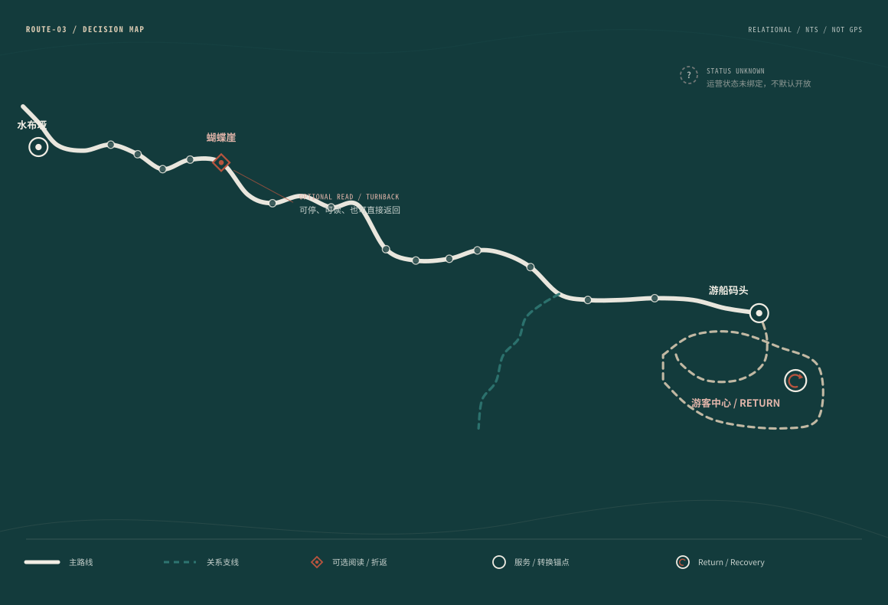

先知道怎么回来，
再决定往哪里走。
路线不是阅读进度。
它先承担选择、转换与 Return。
ROUTE-03 保持唯一路线权威。十三印只在真实路线之上作为可选阅读层出现。
01ORIENT｜确认所在关系看见前后节点、主线与服务锚点。
02CHOOSE｜选择继续方式主线前行、关系支线、蝴蝶崖折返。
03LOAD｜判断身体与转换负担只表达体力 / 转换 / 返回负担，不虚构时间或距离。
04RETURN｜始终知道如何恢复不确定、疲劳或结束时，Return / Service 提升为最高优先。
17 SOURCE NODES · RELATIONAL / NTS · OPERATIONAL STATE NOT BOUND
不证明 GPS、实测距离 / 时间 / 坡度、实时开放状态或现场安全。
不证明 GPS、实测距离 / 时间 / 坡度、实时开放状态或现场安全。

CH14 PRESENCE / LIGHTFUNCTIONAL READABILITY > BRAND DECORATION